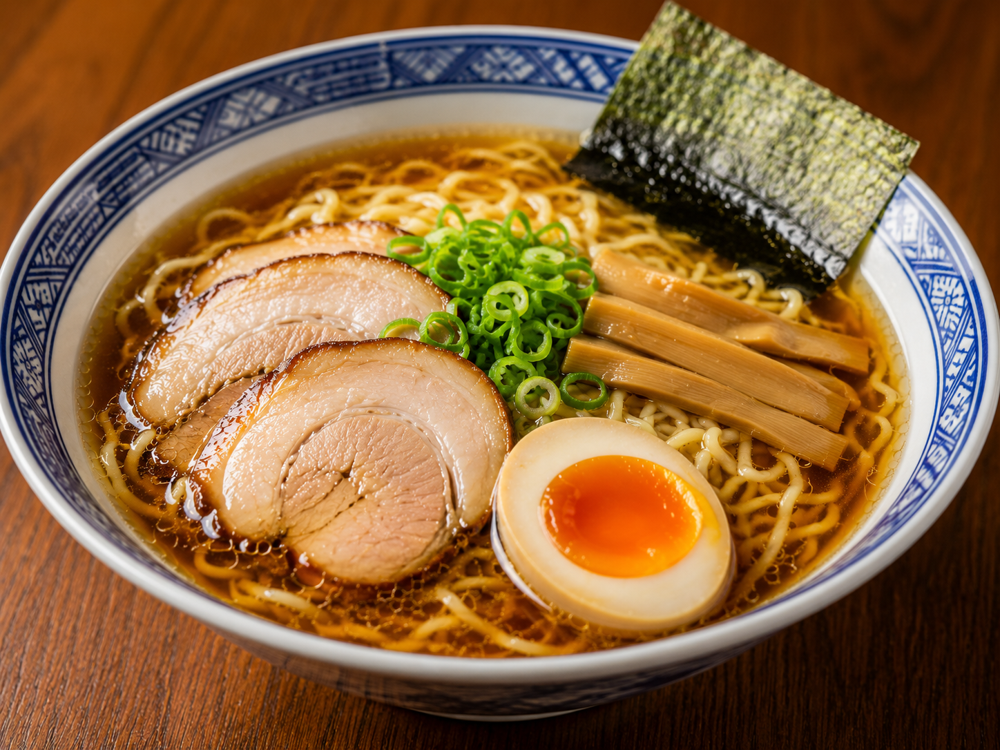
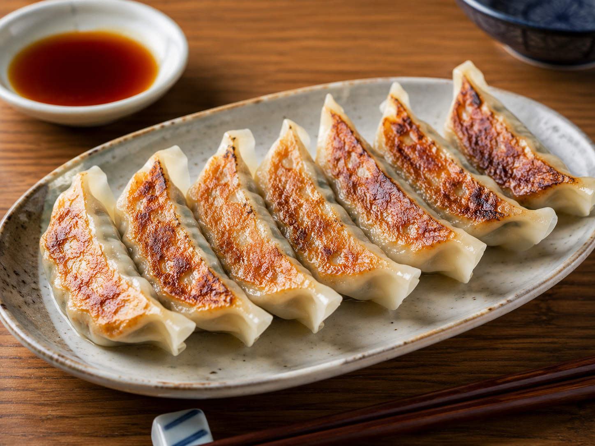
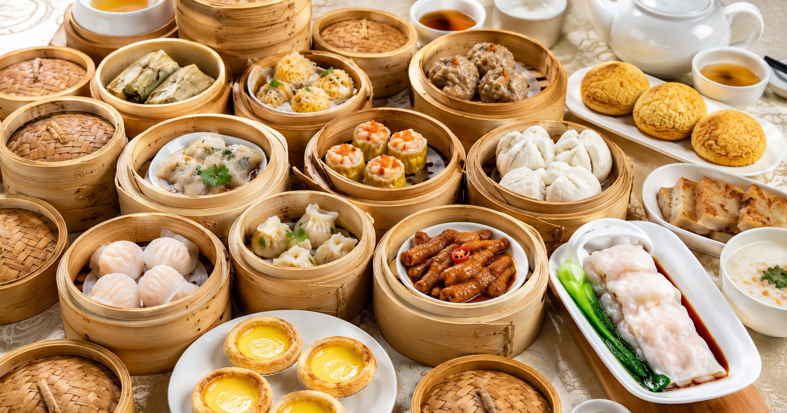
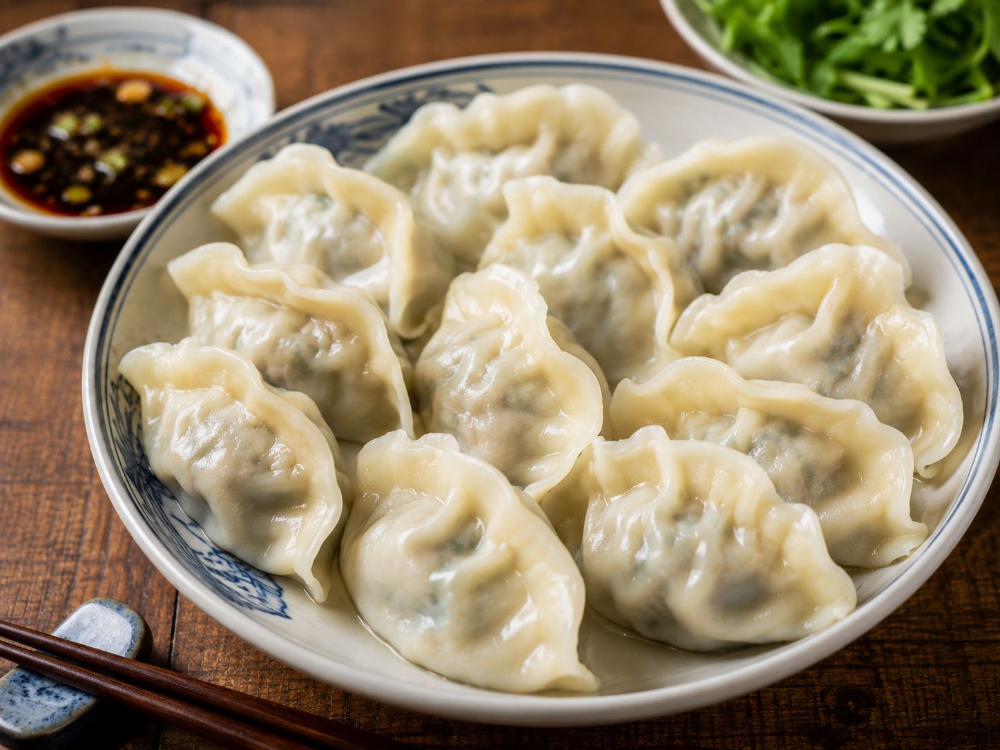

1. 日本国内の中華料理
中華料理は中国から日本へ伝わり、日本人の食生活や好みに合わせて食材や味付け、調理方法が工夫されました。その結果、日本独自の「日本式中華料理」が誕生しました。

ラーメン
醤油、味噌、とんこつ、塩など、さまざまなスープがあります。

餃子
日本では焼き餃子が最も一般的で、皮は薄く、外はパリパリ、中はジューシーなのが特徴です。また、ラーメンやご飯のおかず、お酒のおつまみとして食べられることが多いです。
2. 中国の中華料理
中国は国土が広く、地域ごとに気候や文化が異なります。そのため、四川料理、広東料理、江蘇料理など、それぞれ特色のある料理が発展しました。

広東料理
素材本来の味を生かした、あっさりした味付けが特徴です。

餃子
中国では水餃子や蒸し餃子が主流で、皮が厚めで、もちもちとした食感があります。主食として食べることが多く、地域によって具材や味付けもさまざまです。